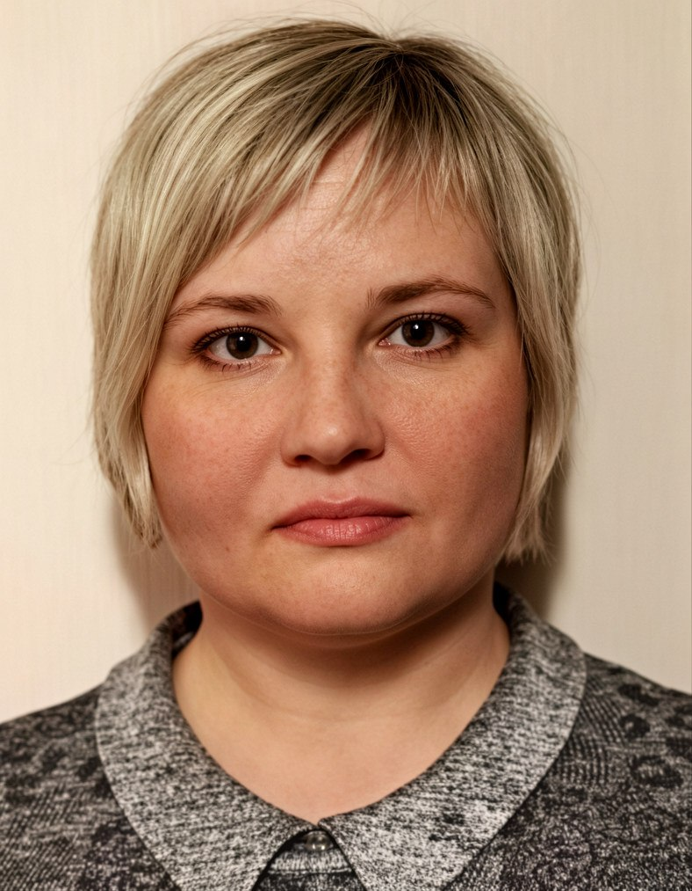
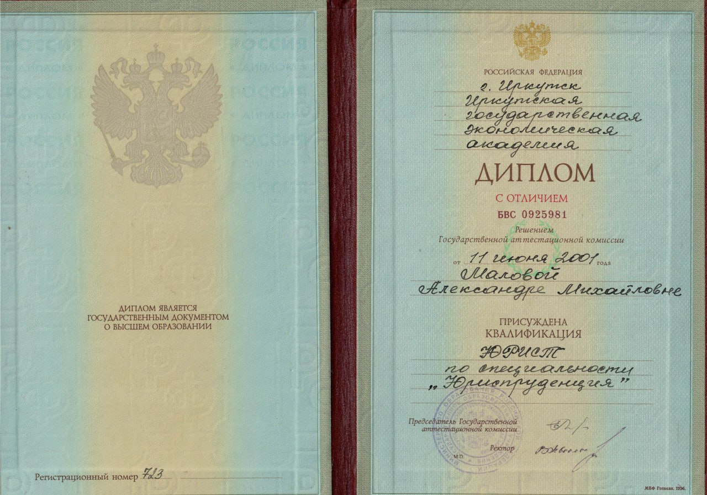
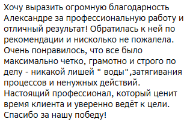
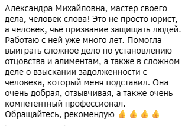
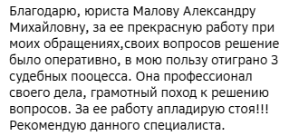
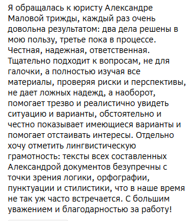

Юридические решения для людей и бизнеса
Высокий уровень профессионализма. Индивидуальный подход. Максимальный учет ваших интересов. Гибкая ценовая политика.
СвязатьсяОбо мне
Малова Александра Михайловна
В 2001 году окончила факультет гражданского и предпринимательского права БГУ с отличием. С 2001 года опыт работы в юридической сфере, в том числе в должности директора по правовым вопросам. С 2013 года веду частную юридическую практику.
Оказываю помощь по гражданским, семейным, наследственным, жилищным, трудовым, пенсионным, страховым, административным и иным вопросам.
Защита прав потребителей, участников долевого строительства, заемщиков.
Трудовые споры (оспаривание дисциплинарных взысканий и увольнений, признание факта трудовых отношений и т.д.).
Семейные споры (раздел имущества, алименты, определение места жительства детей и порядка общения).
Жилищные споры, решение проблем при приватизации, в т.ч. в судебном порядке (признание утратившим право пользования и др.). Сопровождение сделок с недвижимостью.
Составление и правовой анализ любых договоров.
Подготовка претензий, исков, жалоб, заявлений.
Представительство в судах (СОЮ, арбитраж).
Правовое сопровождение бизнеса, в т.ч. по договорам абонентского обслуживания. Взаимодействие с Роскомнадзором (обработка ПД), ЦБ РФ (ломбарды), Роспотребнадзором, органами следствия, прокуратуры (в т.ч. транспортной), иными государственными и муниципальными органами.
Обеспечение транспортной безопасности (в т.ч. разработка паспорта ОТБ, отчета о проведении обследования ТС по мерам от угроз АНВ и иных документов). Опыт правового сопровождения лизинговой, торговой деятельности, деятельности ломбардов (в т.ч. ГИИС ДМДК, 115-ФЗ), ландшафтного проектирования, подряда.
Регистрация юридических лиц и ИП, изменение сведений в ЕГРЮЛ. Разработка учредительных документов и локальных нормативных правовых актов любой сложности. Правовое сопровождение работы отдела кадров.
Высокий уровень профессионализма. Индивидуальный подход. Максимальный учет ваших интересов. Гибкая ценовая политика.


Услуги и стоимость
Стоимость юридических услуг. Подробности и условия сотрудничества можно уточнить при консультации.
Консультации и анализ документов
Подготовка юридических документов
Суды общей юрисдикции
Арбитражные споры и исполнительное производство
Дополнительные услуги и обслуживание бизнеса
Стоимость абонентского обслуживания определяется в зависимости от объема и видов услуг. Представление интересов Клиента-Абонента в судах в стоимость не входит.
Судебная практика
01 Арендные споры Отказ в иске о взыскании арендной платы В иске арендодателю отказано полностью
Клиент досрочно освободил арендуемое помещение, уведомив об этом работников арендодателя только в устной форме. Через десять месяцев арендодатель обратился в суд с иском о взыскании арендной платы и неустойки. Первоначальный анализ с учетом судебной практики по аналогичным делам свидетельствовал о высоких рисках удовлетворения иска. Путем самостоятельного сбора и истребования через суд дополнительных доказательств нам удалось доказать в суде, что помещение сразу было сдано в субаренду другому лицу, а также что договор субаренды с клиентом в силу п. 2 ст. 618 ГК РФ был прекращен до освобождения помещения, поскольку между арендодателем и собственником помещения был расторгнут договор аренды (о чем клиент не был уведомлен). В результате в иске арендодателю было отказано полностью.
Судебный акт ↗02 Недвижимость · Споры с администрацией Отказ в иске администрации г. Иркутска о приведении нежилого помещения в первоначальное состояние В иске администрации отказано, взысканы расходы на экспертизу
Администрация г. Иркутска обратилась с иском о приведении нежилого помещения, расположенного в многоквартирном доме, в первоначальное состояние. Однако перепланировка помещения клиентом не производилась, а выполнение требований администрации могло повлечь для клиента значительные издержки, а кроме того, привести к ущербу несущим конструкциям всего дома. В процессе рассмотрения дела по нашим ходатайствам была истребована архивная проектная документация дома, на основании анализа которой выявились несоответствия между ней и поэтажным планом дома, а также экспликацией помещения. В связи с этим по нашему ходатайству была проведена комплексная экспертиза, в ходе которой было установлено, что перепланировка помещения не производилась, а в технической документации на помещение и дом содержались ошибки. В результате в иске администрации г. Иркутска было отказано, также с нее были взысканы расходы на проведение экспертизы.
Судебный акт ↗03 Договор подряда · Проектные работы Частичное удовлетворение иска о взыскании предоплаты по договору подряда на выполнение проектных работ Взыскано менее 50 % предоплаты, во взыскании неустойки отказано
Заказчик не предоставил клиенту всю необходимую документацию для проектирования и потребовал возврата предоплаты и выплаты неустойки. В суде удалось доказать, что исходная документация в полном объеме не предоставлена, а также провести строительно-техническую экспертизу, против которой возражал заказчик. Экспертиза установила факт непредоставления части исходной документации и определила процент выполненных клиентом работ по проекту. В результате суд постановил решение о взыскании менее 50 % предоплаты, а во взыскании неустойки отказал.
Судебный акт ↗04 Защита прав потребителей · Экспертизы Удовлетворение иска после двух экспертиз "не в пользу" истца Иск удовлетворён, решение оставлено в силе в апелляции
Судом в деле по иску клиента о взыскании средств за некачественный мотовездеход была назначена автотехническая экспертиза, результаты которой были не в пользу клиента. По нашему ходатайству на основе рецензии и допроса эксперта судом была назначена повторная экспертиза. Однако и ее выводы были не в пользу клиента. В результате при наличии в материалах дела двух экспертных заключений «не в пользу» клиента, мы вынуждены были доказывать наличие недостатков, возникших в товаре до момента его передачи клиенту, с помощью сбора и истребования иных доказательств. После достаточно сложного и продолжительного процесса судом было вынесено решение об удовлетворении иска. В апелляции решение было оставлено в силе.
Судебный акт ↗Отзывы клиентов




Контакты
Свяжитесь любым удобным способом.
Телефон: +7 (904) 158-93-64
Почта: mam1979@yandex.ru
Telegram: @AlexLawIrk
Адрес: г. Иркутск, ул. Помяловского, 18